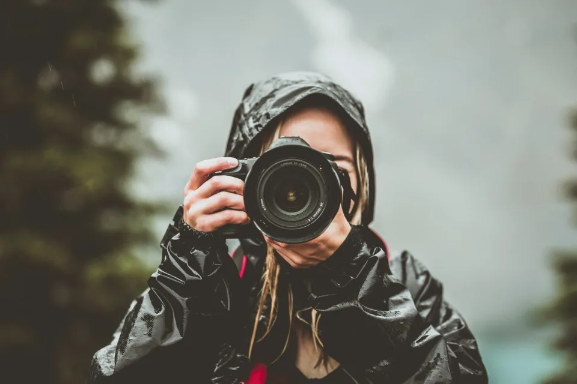
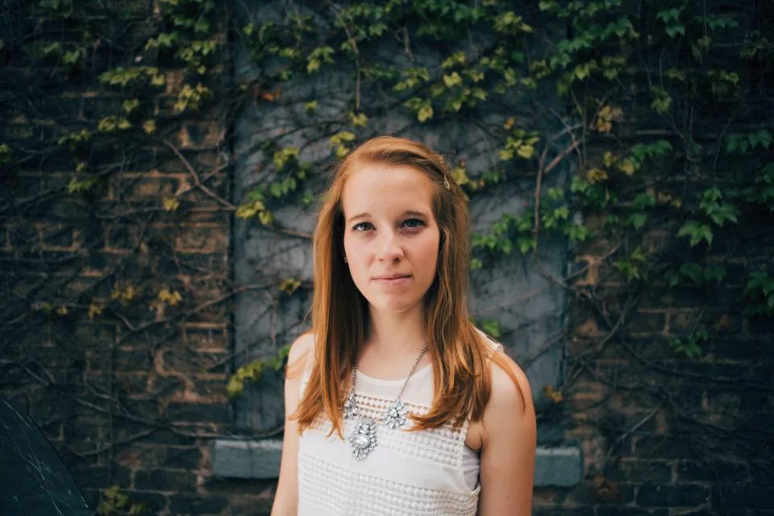
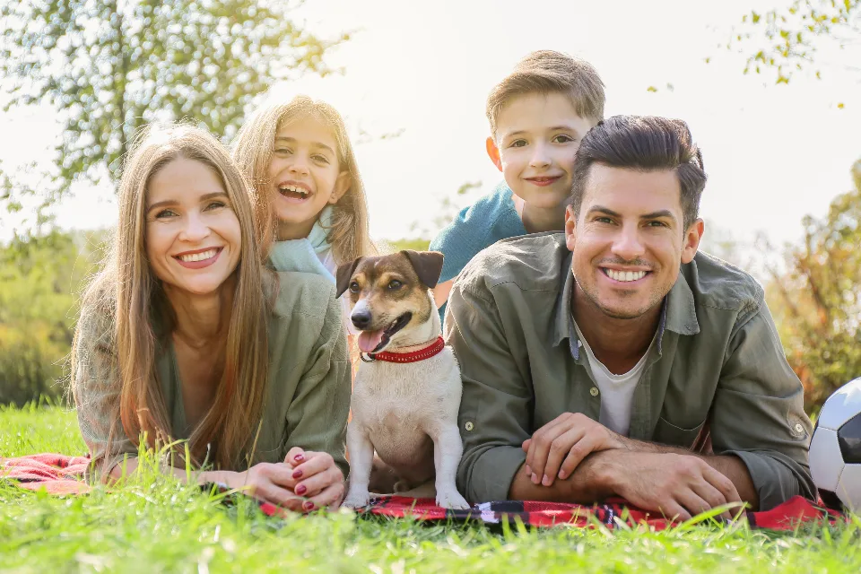

Retratos
Sesiones personales y profesionales, en estudio o exteriores.
Fotógrafo · Buenos Aires
Retratos, eventos y marcas. Fotografía con dirección de arte y entrega en 7 días.

Sobre mí
Hace 9 años que fotografío personas y marcas. Me gusta la luz natural, los gestos espontáneos y las fotos que cuentan algo.
Servicios
Sesiones personales y profesionales, en estudio o exteriores.
Casamientos, cumpleaños y eventos corporativos.
Producto, equipo y contenido para redes.
Portfolio


Opiniones
“Las fotos de nuestro casamiento son una obra de arte.”
Lu & Fede★★★★★
“Nos renovó toda la imagen de la marca.”
Café Tilo★★★★★
Contacto
Respondemos en menos de 2 horas, de lunes a sábado.
Consultar fecha